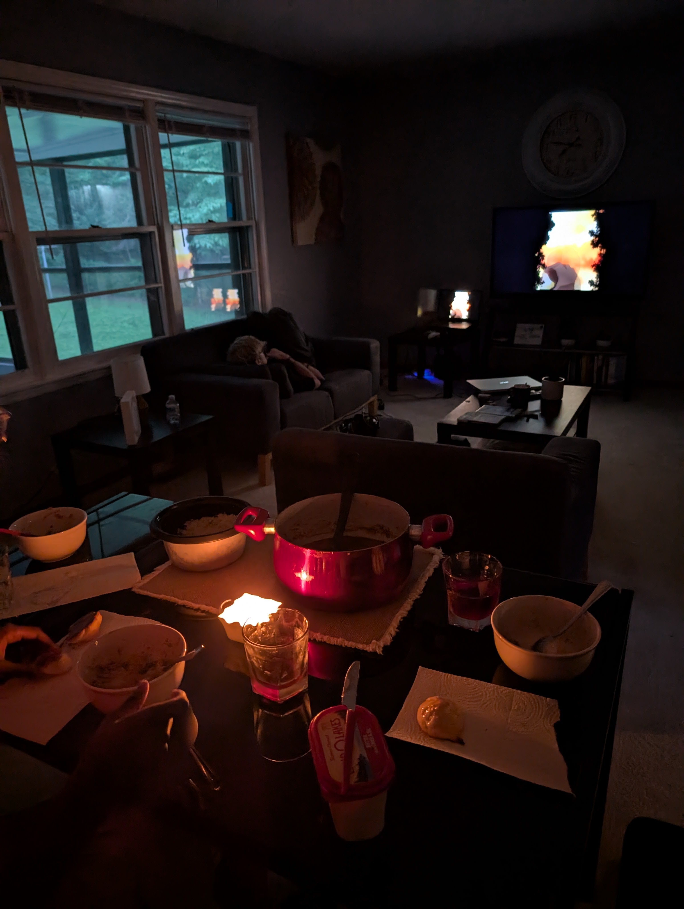
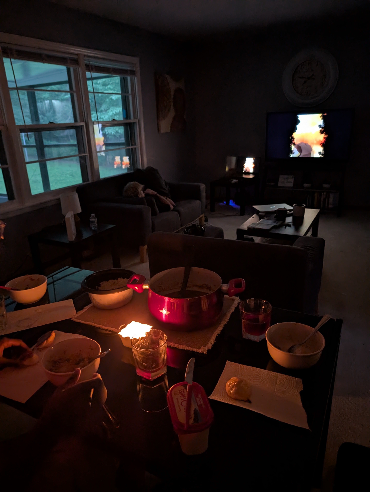

Week 1: Settling In and Getting Started (5/26–5/30)
The first week in Huntsville was spent with getting acquainted and immersing myself in the internship.
Monday (5/26), we moved into the Airbnb and worked through the materials Mundy shared. I also helped Nasya with Git and we all talked about our project goals to get a better idea of what everyone is doing..
Tuesday was our first full day. We set up our computers, got a quick tour of the Spine and teh AI lab, and had lunch with the AI branch at Viet Huong. The food was pretty good but I got to talk to a bunch of new people which was great. In the afternoon, we met again with Mundy for a more in-depth walkthrough of our summer goals, which include a blog, journal club, and presentations.
Wednesday was mostly training. I had a project meeting with Mundy and learned that I’ll be working on an AI-focused task, while Nasya is exploring persistent homology. I started digging into RAG (retrieval-augmented generation) and got a better sense of the tech stack. Another tour later in the day introduced us to people working in RL, modeling, and other areas. We wrapped up by sorting out logistics like timesheets and talking weekend plans.
Thursday, I focused on researching different RAG approaches and even got a small fake-data database up and running. I had another chat with Mundy to clarify project goals.
Friday I narrowed my RAG approach and tried running a local LLM to experiment with prompt strategies. We had lunch for Dylan’s last day, then later I had a great chat with a member of the electronics and GNC team along with a really awesome tour of some stuff the GNC guy was working on. Mundy also gave us a solid session on professional development—things like networking, writing, and pushing ourselves a bit beyond the base requirements. I closed the week helping Nasya and Daniel troubleshoot parts of their projects.
 

Week 2

Week 3